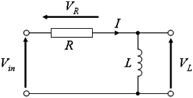

12.8.6 An example: finding the surface of revolution with minimal area
In this section, you will find the function
y0∈ D={y∈ C1[0,1]:y(0)=1,y(1)=2/3} for which the area of the
corresponding surface of revolution is minimal.
The area of the surface of revolution is measured by the functional
First, set f(y,y′,x)=y(x) √1+y′(x)2 and compute the
associated Euler-Lagrange equation:
| eq:=euler_lagrange(y(x)*sqrt(1+diff(y(x),x)^2)) |
|
| |
| ⎡
⎢
⎢
⎢
⎢
⎢
⎢
⎢
⎢
⎢
⎢
⎣ | − | | =K0, | | y | ⎛
⎝ | x | ⎞
⎠ | = | | ⎤
⎥
⎥
⎥
⎥
⎥
⎥
⎥
⎥
⎥
⎥
⎦ |
| | | | | | | | | | |
|
You can obtain the stationary function by finding the general solution
of the first equation.
| sol:=collect(simplify(dsolve(eq[0],x,y))) |
|
| |
| ⎡
⎢
⎢
⎢
⎢
⎣ | −K0, | | K0 | ⎛
⎜
⎜
⎜
⎜
⎝ | − | ⎛
⎜
⎝ | e | | ⎞
⎟
⎠ | | −1 | ⎞
⎟
⎟
⎟
⎟
⎠ |
|
|
|
| ⎤
⎥
⎥
⎥
⎥
⎦ |
| | | | | | | | | | |
|
(See Section 10.1.18.)
Obviously the constant solution −K0 is not in D, so set y0
to be the second element of the above list. That function, which can
be written as y0(x)=−K0 cosh(x−c1/K0),
is called a catenary.
| y0:=sol[1]:; p:=[K_0,c_1]:; |
To find the values of K0 and c1 from the boundary conditions,
first plot the curves y0(0)=1 and y0(1)=2/3 for
K0∈[−1,1] and c1∈[−1,2] to see where they intersect each
other.
| eq1:=subs(y0,x=0)=1:; eq2:=subs(y0,x=1)=2/3:;
implicitplot([eq1,eq2],K_0=-1..1,c_1=-1..2) |

Observe that there are exactly two catenaries satisfying the
Euler-Lagrange necessary conditions and the given boundary conditions:
the first with K0≈ −0.5 and c1≈ 0.6 and the second
with K0≈ −0.3 and c1≈ 0.5. You can obtain the values of
these constants more precisely by using fsolve.
| p1:=fsolve([eq1,eq2],p,[-0.5,0.6]);
p2:=fsolve([eq1,eq2],p,[-0.3,0.5]) |
|
| |
[−0.56237423894,0.662588703113],[−0.30613431407,0.567138261119]
| | | | | | | | | | |
|
You can check, for each catenary, that fy′ y′(x,yk,yk′)>0 holds for k=1,2.
| y1:=subs(y0,p,p1):; y2:=subs(y0,p,p2):;
D2f:=diff(f,diff(y(x),x),2):;
solve([eval(subs(D2f,y=y1,y(x)=y1))<=0,x>=0,x<=1],x);
solve([eval(subs(D2f,y=y2,y(x)=y2))<=0,x>=0,x<=1],x) |
You can conclude that the strong Legendre condition is satisfied in
both cases, so you can proceed by attempting to find the points conjugate
to 0 for each catenary. The function y0 depends on two parameters,
so use conjugate_equation to find these points
easily.
| fsolve(conjugate_equation(y0,p,p1,x,0)=0,x=0..1);
fsolve(conjugate_equation(y0,p,p2,x,0)=0,x=0..1) |
|
| |
[0.0],[0.0,0.799514772606]
| | | | | | | | | | |
|
You can conclude that there are no points conjugate to 0 in (0,1]
for the catenary y1, so it minimizes the functional F. However,
for the other catenary there is a conjugate point in the relevant
interval, therefore y2 is not a minimizer.
You can verify the above conclusions by computing surface areas for
catenaries y1 and y2.
| int(y1*sqrt(1+diff(y1,x)^2),x=0..1);
int(y2*sqrt(1+diff(y2,x)^2),x=0..1) |
|
| |
0.81396915825,0.826468466845
| | | | | | | | | | |
|
You can see that the surface formed by rotating the curve y1 is
indeed smaller than the area of the surface formed by rotating the
curve y2. Finally, you can visualize both surfaces for convenience.
| plot3d([y1*cos(t),y1*sin(t),x],x=0..1,t=0..2*pi, display=yellow+filled) |
| plot3d([y2*cos(t),y2*sin(t),x],x=0..1,t=0..2*pi, display=yellow+filled) |
(See Section 17.2.4 for information on plot3d.)